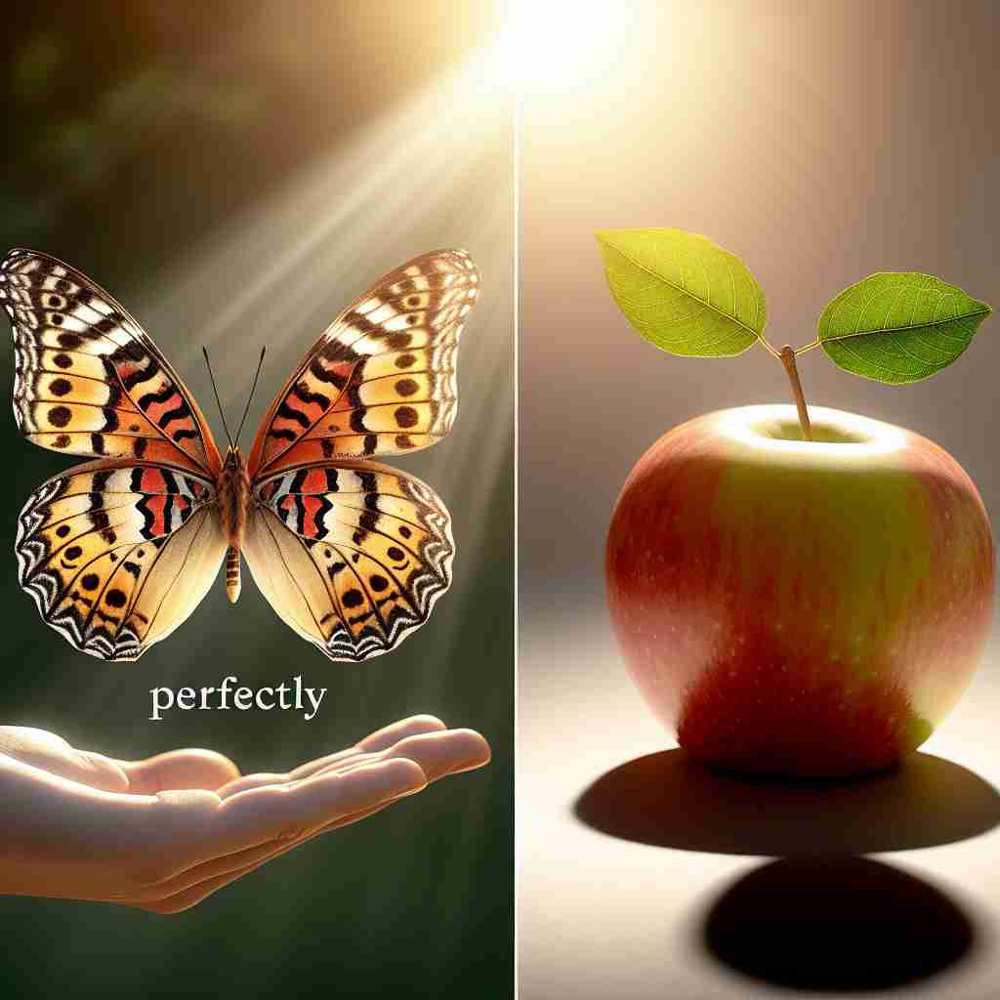

💬 The engineer wants to measure perfectly with the caliper.

💬 The butterfly is perfectly held in the child's hand.
💬 The garden is a perfectly arranged garden filled with flowers and greenery.
🔈 ['pɜːfɪk(t)lɪ]
🗝️ adv. in a way that is complete and without any flaws
🖼️ 在一个精致的蛋糕展示会上，一位糕点师自豪地展示他的作品。蛋糕表面光滑无暇，每一个细节都精雕细琢。观众们啧啧称赞，纷纷表示这是一个完美无瑕的作品，正如'perfectly'形容的那样。
🔍 想象一个没有任何瑕疵的圆。这个完美的圆代表了'perfectly'的核心含义：完美无缺。从这个核心概念出发，我们可以理解它在不同语境中表示精确、完全、强调或非常满意的用法。记住这个完美的圆，就能轻松掌握'perfectly'的各种用法。
💬 The engineer wants to measure perfectly with the caliper.
💬 The butterfly is perfectly held in the child's hand.
💬 The garden is a perfectly arranged garden filled with flowers and greenery.
🌳 由基本词 "perfect"（完美的）加上修饰副词的后缀 "-ly" 组成，构成一个副词，表示 "完美地"。
💡 记忆 "perfectly" 时，可以联想为 "perfect" 加上副词形式的 "-ly" 后缀，表示以完美的方式。通过将 "完美" 和 "地" 的概念联系起来，更容易记住它的意思。
🗝️ adv. exactly or precisely
🖼️ 在一个工地上，建筑师正在仔细测量每一个角度。他调整了一块石板，直到它'perfectly'对齐，确保整个建筑的精确度无懈可击。
💬 I know perfectly well what you mean.
❓ 完美意味着精确无误
🗝️ adv. completely or entirely
🖼️ 一个寒冷的冬日，孩子们在后院堆雪人。他们把雪球滚得越来越大，直到整个雪人'perfectly'覆盖了一整面空地，展现出这一天的丰硕成果。
💬 I'm perfectly happy with the results.
❓ 完美意味着完全、彻底
🗝️ adv. used to emphasize what you are saying
🖼️ 在一个晚宴上，主人向客人推荐一道特别的菜，热情地说道：'这道菜绝对会让你们觉得美味无比，你们'perfectly'可以放心品尝。'这种语气强调了主人对这道菜的自信。
💬 It's perfectly normal to feel nervous before an exam.
❓ 完美的状态用来强调某种情况
🗝️ adv. in a very satisfactory way
🖼️ 在一个欢快的音乐会结束后，指挥回头向乐团致意。观众起立鼓掌，表示这场演出'perfectly'达到了他们的期望，让大家心满意足地享受了一场视听盛宴。
💬 The new system works perfectly.
❓ 完美意味着令人非常满意